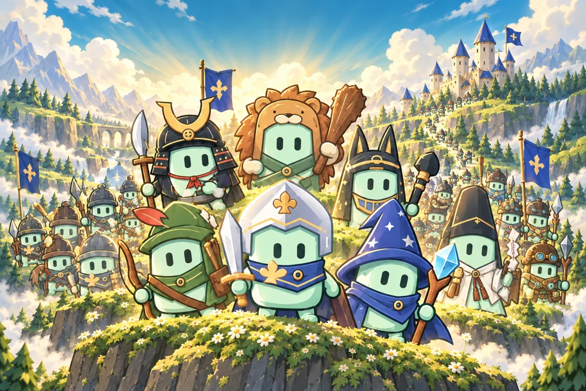
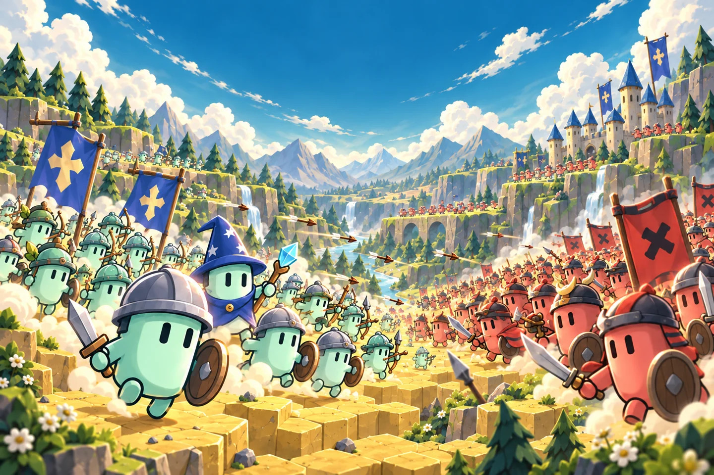
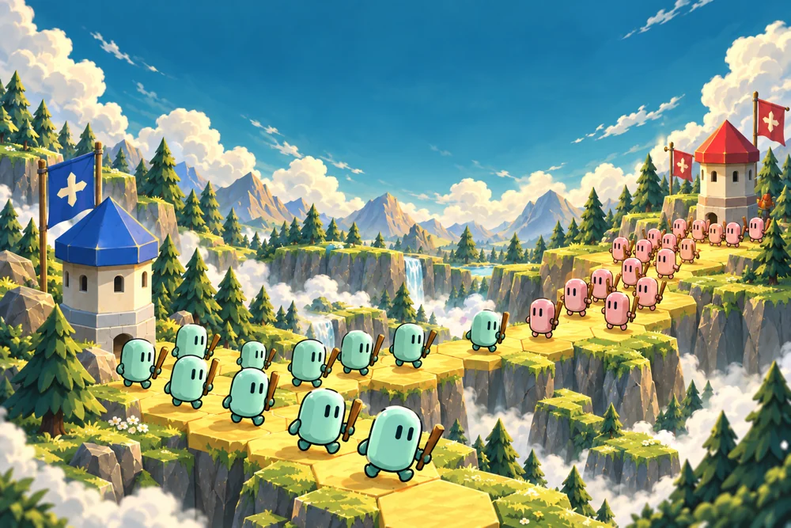
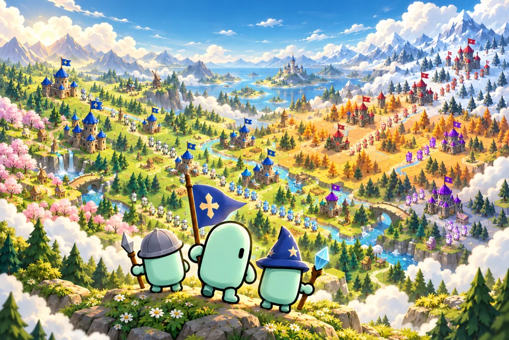

전략 · 수집 · 대전
포포라: 노모 군단
나만의 노모 군단을 이끌고, 더 큰 세계로.
수집하고, 합치고, 배치하세요. 귀여운 노모들의 조합이 새로운 전략이 됩니다.
iOS와 Android 출시를 준비하고 있습니다.
게임 세계를 표현한 일러스트작은 노모들이 만드는 큰 이야기

타워 점령전

노모 부족전
포포라 도움이 필요하신가요?
계정 연결, 저장 기록, 구매, 계정 삭제에 대한 안내를 확인하세요.